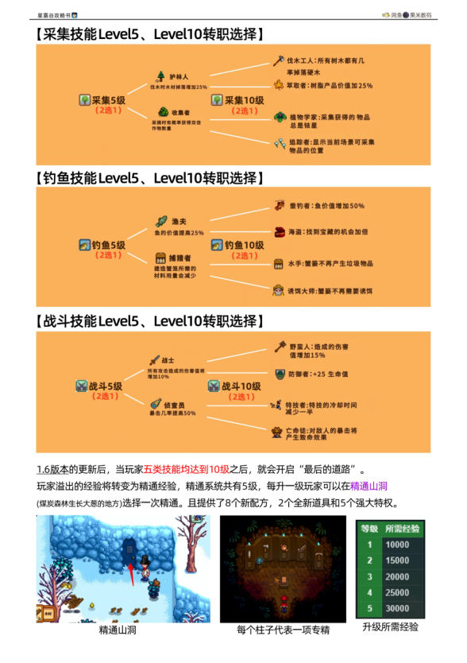

系统与数值
生命与能量怎么算、睡觉能回多少、技能经验怎么涨、那些永久能力从哪来。

生命值
只有生命值不满、或身处矿井 / 秘密森林 / 骷髅洞穴时，界面才会显示生命条（位于能量条左侧）。
| 项目 | 数值 / 规则 |
|---|---|
| 初始上限 | 100 点 |
| 等级加成 | 战斗技能每升 1 级 +5 上限；5 级与 10 级不加，只能靠战士 / 防御者职业补 |
| 额外上限 | 阅读秘密纸条 #10 并完成任务，上限 +25 |
| 昏迷代价 | 损失现金最多 15,000g，并可能掉落最多 3 件物品（找回服务只能取回 1 件） |
| 凤凰戒指 | 生命归零时恢复到 50% 最大生命而非昏迷，每天一次 |
| 吸血戒指 | 每击杀一只怪物回复 2 点生命 |
| 仙女盒 | 造成或承受伤害后，每隔 3.5–4.7 秒自动回血 |
在矿洞门口、农舍卧室或哈维诊所醒来；骷髅洞穴里昏迷必定在哈维诊所。下雨天、火车、炸弹、史莱姆与农场怪物都会掉血。
能量与精疲力尽
| 状态 | 触发条件 | 后果 |
|---|---|---|
| 精疲力尽 | 能量降到 0 或以下 | 头上出现 X 气泡，无法跑动与钓鱼，状态持续一整天 |
| 晕倒（体力） | 能量降到 −15 | 当天直接结束，在室外额外损失 10% 现金，最多 1,000g |
| 精疲力尽后睡觉 | — | 次日能量再减 50%，同时解除精疲力尽 |
| 解除方式 | — | 肌肉回复药，或已婚时亲吻配偶（每天第一次） |
工具消耗与技能等级相关：每级熟练度让对应工具少耗 0.1 点。镐、斧、锄、喷壶每次 2 点，钓鱼竿 8 点；洒水壶蓄力每级多耗 2 点，铱喷壶满蓄力 10 点。淘盘、镰刀、武器不耗能量，挤奶桶与剪刀恒定 4 点。
能量见底后继续干活只会白扣 50% 次日能量，还跑不动。收工前去温泉泡一会，或直接在午夜前睡觉更划算。
睡觉与能量恢复
| 睡觉时间 | 次日能量 |
|---|---|
| 午夜 12:00 前 | 回复 100%（未精疲力尽时） |
| 凌晨 1:00 | 约 75% |
| 凌晨 2:00 | 强制晕倒，按昏迷结算 |
| 精疲力尽状态下睡觉 | 再减 50%，但会解除精疲力尽 |
次日能量不会低于 1 点；若次日初始能量低于睡前剩余能量，则保持睡前值。技能升级当天、或用不确定雕像改职业后，醒来必定满能量。
多人游戏：白天躺在床上可每秒回复 2 点能量（等同泡温泉），只有所有玩家都躺下或晕倒才会结束当天。
时间与日落
| 项目 | 数值 |
|---|---|
| 一天 | 6:00 起床，20 小时，2:00 强制晕倒 |
| 日落 | 春夏 20:00、秋 19:00、冬 18:00 |
| 加工计时 | 6:00–2:00 的 20 小时算 1,200 分钟；2:00–6:00 每小时只算 100 分钟 |
| 折算 | 一个完整昼夜算 1,600 分钟，而不是 1,440 分钟 |
这条规则的实际意义：需要 240–400 分钟的加工（松露油 360 分钟、金锭 300 分钟），凌晨 1:50 放进去也能在 6 点前完成。睡前顺手塞满小桶与熔炉，第二天早上就能收。
技能经验
五条技能线所需经验完全相同，10 级累计 15,000 点。
| 等级 | 1 | 2 | 3 | 4 | 5 | 6 | 7 | 8 | 9 | 10 |
|---|---|---|---|---|---|---|---|---|---|---|
| 所需 XP | 100 | 380 | 770 | 1,300 | 2,150 | 3,300 | 4,800 | 6,900 | 10,000 | 15,000 |
采集经验明细
| 行为 | XP |
|---|---|
| 移除大树桩 / 大圆木 | 25 |
| 挖掘远古斑点 / 绿色斑点 | 15 |
| 清除巨型苔雨杂草 | 15 |
| 用斧头砍倒一棵树 | 14 |
| 拾取地上的采集物 | 7 |
| 姜岛挖姜 / 淘盘每件物品 | 7 |
| 春季煤矿森林大葱 | 3 |
| 移除树倒后的树桩 | 2 |
| 移除树枝 | 1 |
| 农场洞穴蘑菇 / 蘑菇树桩 | 5 |
炸弹炸树、葡萄种子种出的葡萄、挖出来的雪山药与冬根、花盆作物、蘑菇树产出的蘑菇、矿井里非采集类矿物，都不给采集 XP。收获作物不给锄头/喷壶经验；照顾动物（抚摸、挤奶、剪毛、收产品）每次 5 点耕种经验。
技能头衔
头衔 =（耕种 + 钓鱼 + 采集 + 战斗 + 采矿 + 运气）÷ 2。运气等级在正常游戏里不会增长，所以实际可达到的最高是「农夫」。
| 等级 | 头衔 | 等级 | 头衔 |
|---|---|---|---|
| ≤ 2 | 新人 | > 14 | 农夫条款 |
| > 4 | 乡巴佬 | > 16 | 农场男孩 / 农场女孩 |
| > 6 | 牛仔 | > 18 | 农场管家 |
| > 8 | 农场工人 | > 20 | 种植者 |
| > 10 | 锄地机 | > 22 | 牧场主 |
| > 12 | 小农场主 | > 24 | 农夫 |
| > 26 | 农业学家 | > 28 | 作物能手 |
| ≥ 30 | 农场之王（需要运气等级，正常无法达成） | ||
特殊物品与永久能力
这些能力一次获得、永久生效，是很多玩家卡进度的真正原因。
| 能力 | 作用 | 获取方式 |
|---|---|---|
| 森林魔法 | 阅读社区中心的魔法卷轴 | 「老鼠肆虐」任务后第二天拜访法师 |
| 矮人语教程 | 与矿井、火山地牢的矮人交流 | 向博物馆捐赠 4 种矮人卷轴 |
| 生锈的钥匙 | 进入下水道 | 向博物馆捐赠 60 件物品 |
| 会员卡 | 进入沙漠赌场 | 完成「神秘的齐」（秘密纸条 #22） |
| 头骨钥匙 | 进入骷髅洞穴；解锁餐吧赛车机 | 到达矿井 120 层 |
| 放大镜 | 获得寻找秘密纸条的能力 | 完成「冬日谜团」 |
| 黑暗护身符 | 开放女巫小屋三座祭坛 | 突变虫穴的箱子 |
| 魔法墨水 | 开放魔法建筑 | 完成「哥布林问题」，女巫小屋桌上 |
| 熊的知识 | 美洲大树莓与黑莓售价 ×3 | 秘密纸条 #23 |
| 青葱技术 | 大葱售价 ×5 | 文森特与贾斯均 8 心，春季晴天进煤矿森林 |
| 小镇钥匙 | 随时进入镇上所有建筑 | 齐先生核桃房 20 齐钻 |
| 特殊的魅力 | 永久提升每日运气 | 秘密纸条 #20 |
更改职业与外貌
- 改职业：下水道「不确定雕像」，捐 10,000g 后选一项技能，当晚睡觉出现 5 级与 10 级的职业选择界面。只有已选过职业的技能才会出现在菜单里。
- 改职业当天，原职业的售价加成不适用于当天放入出货箱的物品；醒来必定满能量。
- 改外貌：法师塔地下室的「不确定雕像」，随时可重捏角色外观。
- 已经满级想换流派时，这是唯一不重开存档的办法，10,000g 花得很值。
职业技能分支全表
5 级与 10 级各选一次，10 级的可选项由 5 级的选择决定。选错不用重开——下水道不确定雕像 10,000g 可以改。
| 技能 | 5 级（二选一） | 10 级（各对应两个） |
|---|---|---|
| 耕种 | 农耕人：所有作物价值 +10% 畜牧人：畜产品价值 +20% |
农耕人 → 木匠（工匠品如果酒、奶酪、油价值 +40%）／农业学家（作物生长速度 +10%） 畜牧人 → 鸡舍大师（鸡舍动物更快亲近、孵化时间减半）／牧羊人（畜棚动物更快亲近、羊毛长得更快） |
| 采矿 | 矿工：每个金属矿脉 +1 矿石 地质学家：宝石有概率成对出现 |
矿工 → 铁匠（金属锭价值 +50%）／勘探者（找到煤的概率翻倍） 地质学家 → 挖掘者（找到晶球的概率翻倍）／宝石专家（宝石价值 +30%） |
| 采集 | 护林人：砍树木材 +25% 收集者：采摘时有概率获得双倍 |
护林人 → 伐木工（所有树都有概率掉硬木）／萃取者（树脂类产品价值 +25%） 收集者 → 植物学家（采集物总是铱星）／追踪者（显示当前场景可采集物的位置） |
| 钓鱼 | 渔夫：鱼价值 +25% 捕蟹人：建造蟹笼所需材料减少 |
渔夫 → 垂钓者（鱼价值 +50%）／海盗（找到宝箱的概率翻倍） 捕蟹人 → 水手（蟹笼不再产生垃圾）／诱饵大师（蟹笼不再需要鱼饵） |
| 战斗 | 战士：伤害 +10%，最大生命 +15 侦察兵：暴击率 +50% |
战士 → 野蛮人（伤害 +15%）／防御者（最大生命 +25） 侦察兵 → 特技者（特技冷却减半）／亡命徒（暴击伤害翻倍） |
种田卖货走农耕人 → 木匠；下矿刷矿走矿工 → 勘探者；钓鱼赚钱走渔夫 → 垂钓者；怕死走战士 → 防御者；采集图省事走收集者 → 植物学家（采集物全铱星）。